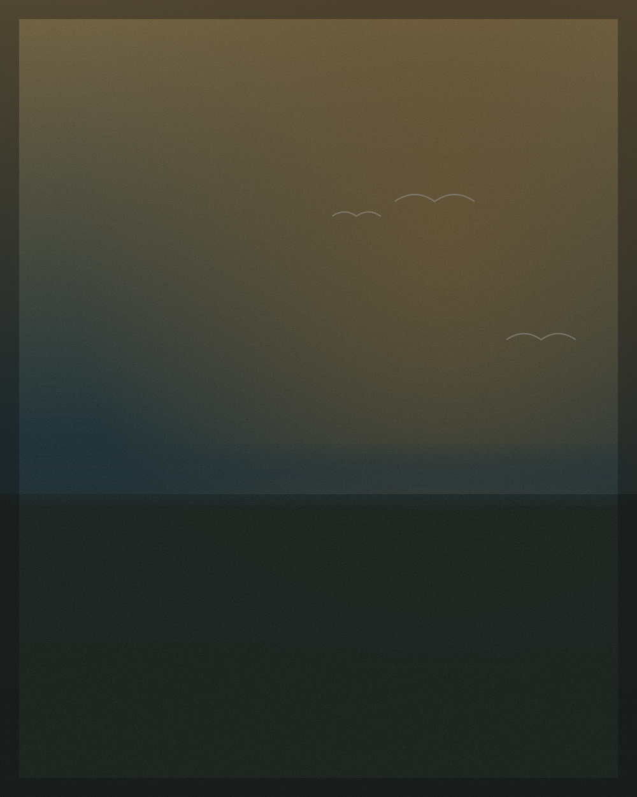
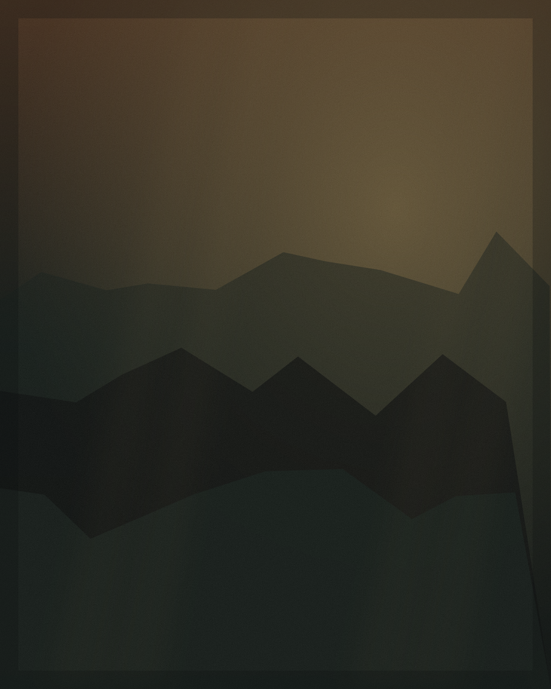

Acervo / Águas da Amazônia
Coleção Águas da Amazônia
A serenidade das águas e a presença ornamental da natureza amazônica em uma única peça de acervo.
Disponível · peça única
Leitura curatorial
Lago das Garças é marcada pela leveza das aves e pela exuberância da paisagem tropical. A obra carrega a serenidade das águas e a presença ornamental da natureza amazônica, tornando-se uma peça de forte valor decorativo e simbólico — uma janela aberta para o silêncio do Norte.
Especificações
| Técnica | Pintura à mão sobre tela |
|---|---|
| Suporte | Tela de algodão sobre chassi de madeira |
| Moldura | Moldura em madeira, acabamento dourado envelhecido |
| Dimensão | 120 × 90 cm (dimensões sob consulta) |
| Estado da peça | Nova · perfeito estado |
| Origem | Belém do Pará, Brasil |
| Disponibilidade | Peça única · disponível |
| Certificado | Acompanha certificado de autenticidade |
| Envio | Nacional · internacional sob consulta |
Ambiente sugerido

Living sofisticado, hall de entrada, suíte principal, escritório, hotelaria e restaurantes de alto padrão. Peça de grande presença para ambientes que valorizam contemplação.
Continue explorando